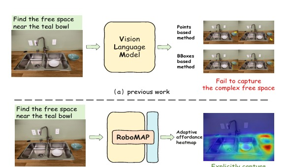

CoRL 2026 · Accepted
More than A Point: Capturing Uncertainty with Adaptive Affordance Heatmaps for Spatial Grounding in Robotic Tasks
Adaptive affordance heatmaps represent continuous spatial uncertainty instead of brittle points or boxes, improving robustness to ambiguous instructions and perceptual noise in real-world manipulation.